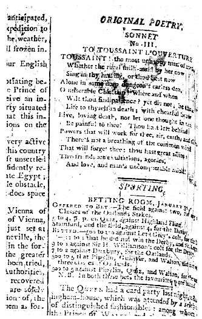
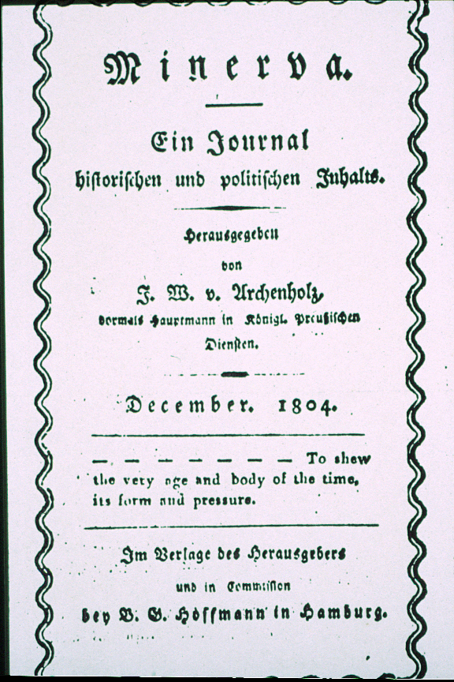
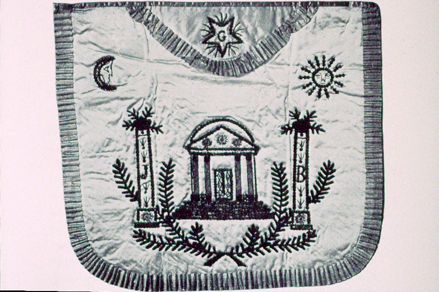
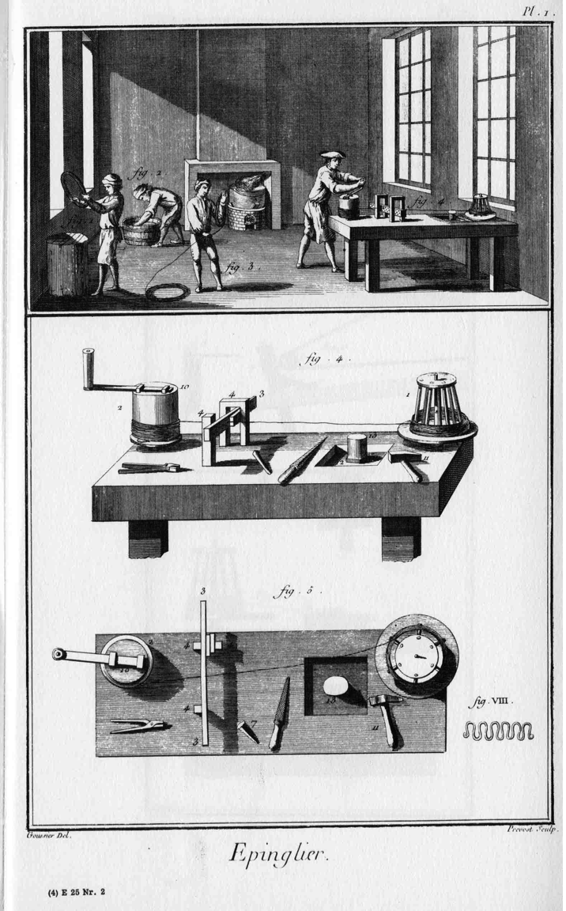
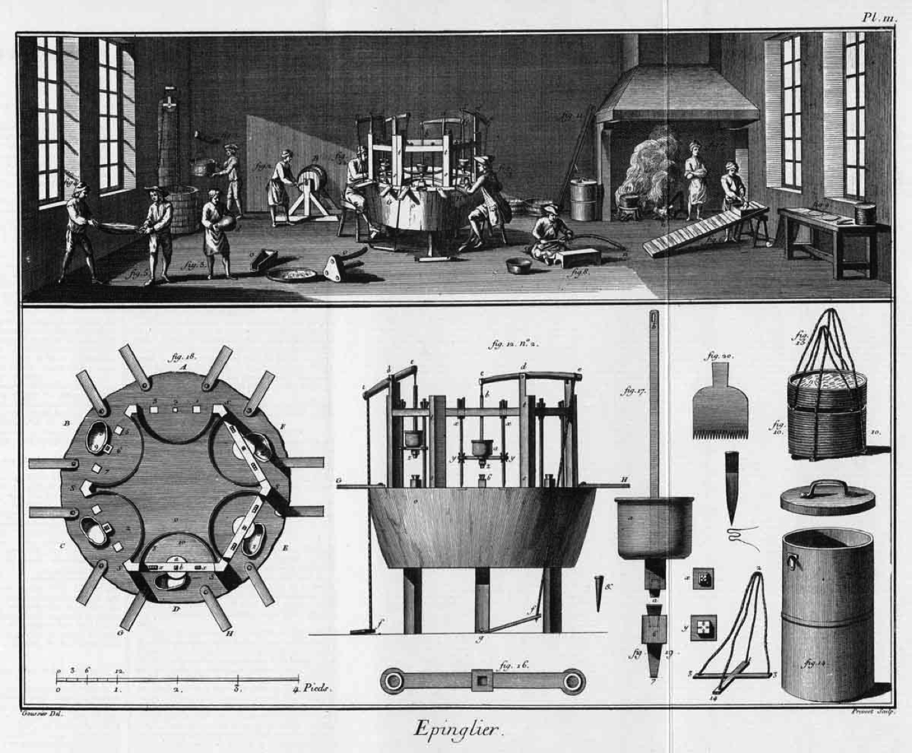
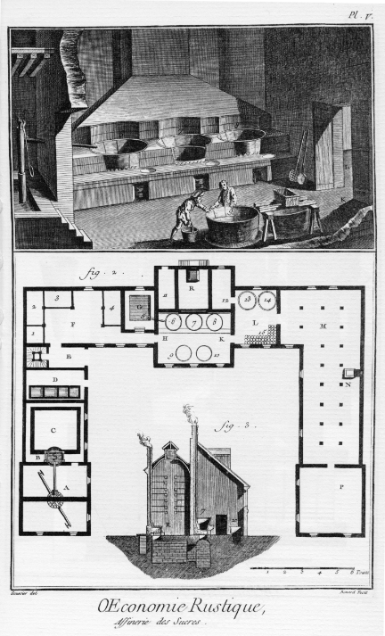
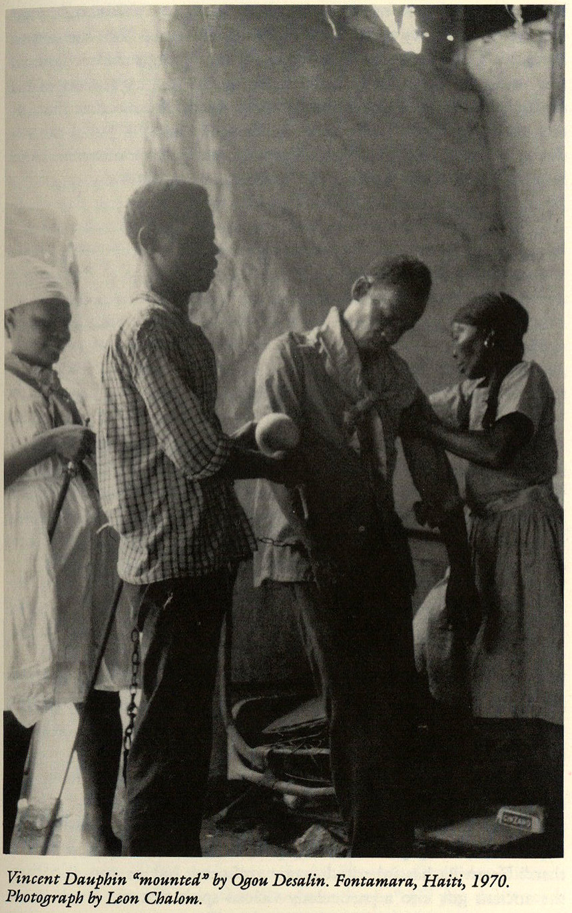
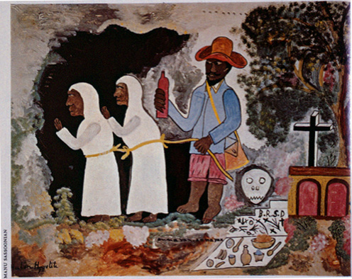
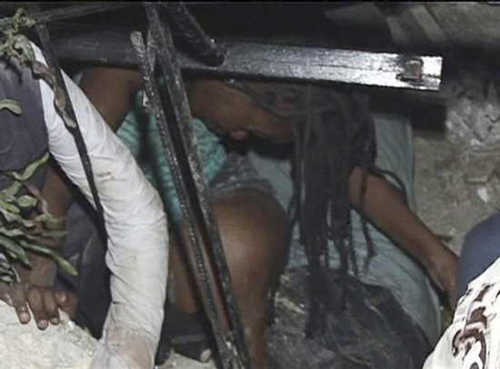

Note on Hegel, Haiti and Universal History
Franz Hals, Portrait of a Dutch Family, 1648. Musep Thyssen-Bornemisza, Madrid

Wordsworth’s sonnet Morning Post, 2 February 1803

Cover page of Minerva

French Masonic apron, late eighteenth century
“A Temple erected by the Blacks to commemorate their Emancipation.” Illustration for Marcus Rainsford, An Historical Account of the Black Empire of Hayti (1805). Line engraving by J. Barlow after the author. On Barlow’s work for this book, see Honour, From the American Revolution to World War I, 95.
Frontispiece to the 1785 edition of Daniel Defoe’s 1719 novel, Robinson Crusoe, vol. I. Illustrated by Mather Brown, engraved by Robert Pollard, From Blewett, Illustration of Robinson Crusoe.

Pin Manufactory (Epinglier), from Diderot and d’Alembert, Encyclopedie, vol. 21.

Pin Manufactory (Epinglier) from Diderot and d’Alembert, *Encyclopedie vol. 21.

Sugar Manufactory (Sucrerie) from Diderot and d’Alembert, Encyclopedie, vol. 18.
Masonic initiation ceremony, late nineteenth century.

Vodou ceremony (1970). Photo by Leon Chalom. From Dayan, Haiti, History and the Gods.

Hector Hyppolite, “An Avan, An Avan!” (Forward, Forward!), e.1947
Ulrick Jean -Pierre “Painting entitled Bois Caïman 1,” (Revolution of Saint-Domingue, Haiti, August 14, 1791), 1979. Oil on canvas, 40*60 in
Jacques-Louis David, “The Tennis Court Oath at Versailles,” n.d. Sketch.
SLUG: ph-haiti DATE: January 13, 2010 NEG NUMBER: 211991 LOCATION: Embassy of Haiti Massachusetts Avenue, NWi PHOTOGRAPHER: GERALD MARTINEAU, for TWP CAPTION: Haitian Ambassador to the U.S. Raymond Joseph talks on the phone with Embassy associates just before he holds a press conference to address the earthquake in his country. StaffPhoto imported to Merlin on Wed Jan 13 09:06:08 2010
